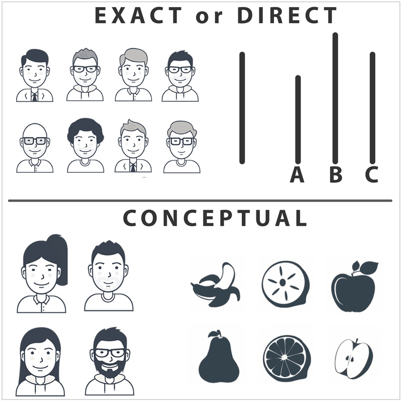
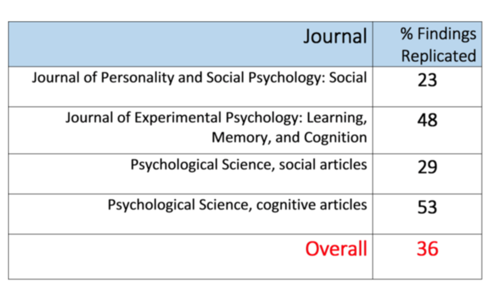
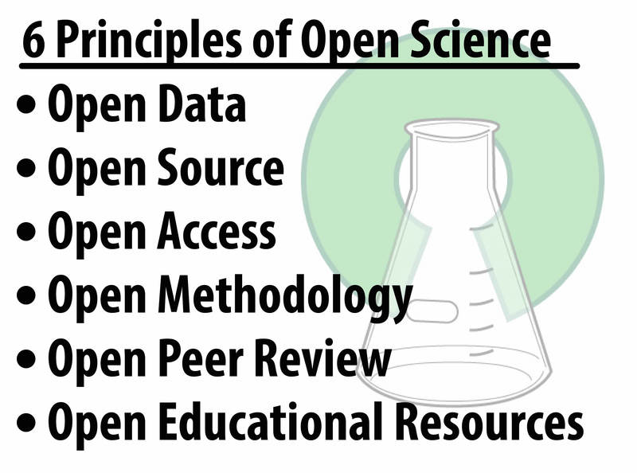

14. The Replication Crisis in Psychology#
In science, replication is the process of repeating research to determine the extent to which findings generalize across time and across situations. Recently, the science of psychology has come under criticism because a number of research findings do not replicate. In this module we discuss reasons for non-replication, the impact this phenomenon has on the field, and suggest solutions to the problem.
14.1. Learning Objectives#
Define “replication”
Explain the difference between exact and conceptual replication
List 4 explanations for non-replication
Name 3 potential solutions to the replication crisis
14.2. The Disturbing Problem#
If you were driving down the road and you saw a pirate standing at an intersection you might not believe your eyes. But if you continued driving and saw a second, and then a third, you might become more confident in your observations. The more pirates you saw the less likely the first sighting would be a false positive (you were driving fast and the person was just wearing an unusual hat and billowy shirt) and the more likely it would be the result of a logical reason (there is a pirate themed conference in town). This somewhat absurd example is a real-life illustration of replication: the repeated findings of the same results.
If you saw a pirate you might not believe it; but if you saw another one you would feel more confident in your observation. In science, this is the process of replication. [Image: Dave Hamster, https://goo.gl/xg5QKi, CC BY 2.0, https://goo.gl/BRvSA7]
The replication of findings is one of the defining hallmarks of science. Scientists must be able to replicate the results of studies or their findings do not become part of scientific knowledge. Replication protects against false positives (seeing a result that is not really there) and also increases confidence that the result actually exists. If you collect satisfaction data among homeless people living in Kolkata, India, for example, it might seem strange that they would report fairly high satisfaction with their food (which is exactly what we found in Biswas-Diener & Diener, 2001). If you find the exact same result, but at a different time, and with a different sample of homeless people living in Kolkata, however, you can feel more confident that this result is true (as we did in Biswas-Diener & Diener, 2006).
In modern times, the science of psychology is facing a crisis. It turns out that many studies in psychology””including many highly cited studies””do not replicate. In an era where news is instantaneous, the failure to replicate research raises important questions about the scientific process in general and psychology specifically. People have the right to know if they can trust research evidence. For our part, psychologists also have a vested interest in ensuring that our methods and findings are as trustworthy as possible.
Psychology is not alone in coming up short on replication. There have been notable failures to replicate findings in other scientific fields as well. For instance, in 1989 scientists reported that they had produced “cold fusion,” achieving nuclear fusion at room temperatures. This could have been an enormous breakthrough in the advancement of clean energy. However, other scientists were unable to replicate the findings. Thus, the potentially important results did not become part of the scientific canon, and a new energy source did not materialize. In medical science as well, a number of findings have been found not to replicate””which is of vital concern to all of society. The non-reproducibility of medical findings suggests that some treatments for illness could be ineffective. One example of non-replication has emerged in the study of genetics and diseases: when replications were attempted to determine whether certain gene-disease findings held up, only about 4% of the findings consistently did so.
The non-reproducibility of findings is disturbing because it suggests the possibility that the original research was done sloppily. Even worse is the suspicion that the research may have been falsified. In science, faking results is the biggest of sins, the unforgivable sin, and for this reason the field of psychology has been thrown into an uproar. However, as we will discuss, there are a number of explanations for non-replication, and not all are bad
14.3. What is Replication?#
There are different types of replication. First, there is a type called “exact replication” (also called “direct replication”). In this form, a scientist attempts to exactly recreate the scientific methods used in conditions of an earlier study to determine whether the results come out the same. If, for instance, you wanted to exactly replicate Asch’s (1956) classic findings on conformity, you would follow the original methodology: you would use only male participants, you would use groups of 8, and you would present the same stimuli (lines of differing lengths) in the same order. The second type of replication is called “conceptual replication.” This occurs when, instead of an exact replication, which reproduces the methods of the earlier study as closely as possible, a scientist tries to confirm the previous findings using a different set of specific methods that test the same idea. The same hypothesis is tested, but using a different set of methods and measures. A conceptual replication of Asch’s research might involve both male and female confederates purposefully misidentifying types of fruit to investigate conformity rather than only males misidentifying line lengths.
Both exact and conceptual replications are important because they each tell us something new. Exact replications tell us whether the original findings are true, at least under the exact conditions tested. Conceptual replications help confirm whether the theoretical idea behind the findings is true, and under what conditions these findings will occur. In other words, conceptual replication offers insights into how generalizable the findings are.

Example of direct replication and conceptual replication of Asch’s conformity experiment.14.4. Enormity of the Current Crisis#
Recently, there has been growing concern as psychological research fails to replicate. To give you an idea of the extent of non-replicability of psychology findings, below are data reported in 2015 by the Open Science Collaboration project, led by University of Virginia psychologist Brian Nosek (Open Science Collaboration, 2015). Because these findings were reported in the prestigious journal, Science, they received widespread attention from the media. Here are the percentages of research that replicated””selected from several highly prestigious journals:
Clearly, there is a very large problem when only about 1/3 of the psychological studies in premier journals replicate! It appears that this problem is particularly pronounced for social psychology but even the 53% replication level of cognitive psychology is cause for concern.
The situation in psychology has grown so worrisome that the Nobel Prize-winning psychologist Daniel Kahneman called on social psychologists to clean up their act (Kahneman, 2012). The Nobel laureate spoke bluntly of doubts about the integrity of psychology research, calling the current situation in the field a “mess.” His missive was pointed primarily at researchers who study social “priming,” but in light of the non-replication results that have since come out, it might be more aptly directed at the behavioral sciences in general.

Table 1: The Reproducibility of Psychological Science14.5. Examples of Non-replications in Psychology#
A large number of scientists have attempted to replicate studies on what might be called “metaphorical priming,” and more often than not these replications have failed. Priming is the process by which a recent reference (often a subtle, subconscious cue) can increase the accessibility of a trait. For example, if your instructor says, “Please put aside your books, take out a clean sheet of paper, and write your name at the top,” you might find your pulse quickening. Over time, you have learned that this cue means you are about to be given a pop quiz. This phrase primes all the features associated with pop quizzes: they are anxiety-provoking, they are tricky, your performance matters.
In one study, researchers enhanced test performance by priming participants with stereotypes of intelligence. But subsequent studies have not been able to replicate those results. [Image: CC0 Public Domain, https://goo.gl/m25gce]
One example of a priming study that, at least in some cases, does not replicate, is the priming of the idea of intelligence. In theory, it might be possible to prime people to actually become more intelligent (or perform better on tests, at least). For instance, in one study, priming students with the idea of a stereotypical professor versus soccer hooligans led participants in the “professor” condition to earn higher scores on a trivia game (Dijksterhuis & van Knippenberg, 1998). Unfortunately, in several follow-up instances this finding has not replicated (Shanks et al, 2013). This is unfortunate for all of us because it would be a very easy way to raise our test scores and general intelligence. If only it were true.
Another example of a finding that seems not to replicate consistently is the use of spatial distance cues to prime people’s feelings of emotional closeness to their families (Williams & Bargh, 2008). In this type of study, participants are asked to plot points on graph paper, either close together or far apart. The participants are then asked to rate how close they are to their family members. Although the original researchers found that people who plotted close-together points on graph paper reported being closer to their relatives, studies reported on PsychFileDrawer, an internet repository of replication attempts, suggest that the findings frequently do not replicate. Again, this is unfortunate because it would be a handy way to help people feel closer to their families.
As one can see from the examples, some of the studies that fail to replicate report extremely interesting findings””even counterintuitive findings that appear to offer new insights into the human mind. Critics claim that psychologists have become too enamored with such newsworthy, surprising “discoveries” that receive a lot of media attention. Which raises the question of timing: might the current crisis of non-replication be related to the modern, media-hungry context in which psychological research (indeed, all research) is conducted? Put another way: is the non-replication crisis new?
Nobody has tried to systematically replicate studies from the past, so we do not know if published studies are becoming less replicable over time. In 1990, however, Amir and Sharon were able to successfully replicate most of the main effects of six studies from another culture, though they did fail to replicate many of the interactions. This particular shortcoming in their overall replication may suggest that published studies are becoming less replicable over time, but we cannot be certain. What we can be sure of is that there is a significant problem with replication in psychology, and it’s a trend the field needs to correct. Without replicable findings, nobody will be able to believe in scientific psychology.
14.6. Reasons for Non-replication#
When findings do not replicate, the original scientists sometimes become indignant and defensive, offering reasons or excuses for non-replication of their findings””including, at times, attacking those attempting the replication. They sometimes claim that the scientists attempting the replication are unskilled or unsophisticated, or do not have sufficient experience to replicate the findings. This, of course, might be true, and it is one possible reason for non-replication.
One reason for defensive responses is the unspoken implication that the original results might have been falsified. Faked results are only one reason studies may not replicate, but it is the most disturbing reason. We hope faking is rare, but in the past decade a number of shocking cases have turned up. Perhaps the most well-known come from social psychology. Diederik Stapel, a renowned social psychologist in the Netherlands, admitted to faking the results of a number of studies. Marc Hauser, a popular professor at Harvard, apparently faked results on morality and cognition. Karen Ruggiero at the University of Texas was also found to have falsified a number of her results (proving that bad behavior doesn’t have a gender bias). Each of these psychologists, and there are quite a few more examples, was believed to have faked data. Subsequently, they all were disgraced and lost their jobs.
Another reason for non-replication is that, in studies with small sample sizes, statistically-significant results may often be the result of chance. For example, if you ask five people if they believe that aliens from other planets visit Earth and regularly abduct humans, you may get three people who agree with this notion””simply by chance. Their answers may, in fact, not be at all representative of the larger population. On the other hand, if you survey one thousand people, there is a higher probability that their belief in alien abductions reflects the actual attitudes of society. Now consider this scenario in the context of replication: if you try to replicate the first study, the one in which you interviewed only five people, there is only a small chance that you will randomly draw five new people with exactly the same (or similar) attitudes. It’s far more likely that you will be able to replicate the findings using another large sample, because it is simply more likely that the findings are accurate.
Another reason for non-replication is that, while the findings in an original study may be true, they may only be true for some people in some circumstances and not necessarily universal or enduring. Imagine that a survey in the 1950s found a strong majority of respondents to have trust in government officials. Now imagine the same survey administered today, with vastly different results. This example of non-replication does not invalidate the original results. Rather, it suggests that attitudes have shifted over time.
A final reason for non-replication relates to the quality of the replication rather than the quality of the original study. Non-replication might be the product of scientist-error, with the newer investigation not following the original procedures closely enough. Similarly, the attempted replication study might, itself, have too small a sample size or insufficient statistical power to find significant results.
14.7. In Defense of Replication Attempts#
Failures in replication are not all bad and, in fact, some non-replication should be expected in science. Original studies are conducted when an answer to a question is uncertain. That is to say, scientists are venturing into new territory. In such cases we should expect some answers to be uncovered that will not pan out in the long run. Furthermore, we hope that scientists take on challenging new topics that come with some amount of risk. After all, if scientists were only to publish safe results that were easy to replicate, we might have very boring studies that do not advance our knowledge very quickly. But, with such risks, some non-replication of results is to be expected.
Researchers use specialized statistical software to store, analyze, and share data. Saving data over time and sharing data with others can be useful in conducting replications. [Image: Kwantlen Polytechnic University Psychology Department, CC BY 2.0, https://goo.gl/BRvSA7]
A recent example of risk-taking can be seen in the research of social psychologist Daryl Bem. In 2011, Bem published an article claiming he had found in a number of studies that future events could influence the past. His proposition turns the nature of time, which is assumed by virtually everyone except science fiction writers to run in one direction, on its head. Needless to say, attacks on Bem’s article came fast and furious, including attacks on his statistics and methodology (Ritchie, Wiseman & French, 2012). There were attempts at replication and most of them failed, but not all. A year after Bem’s article came out, the prestigious journal where it was published, Journal of Personality and Social Psychology, published another paper in which a scientist failed to replicate Bem’s findings in a number of studies very similar to the originals (Galak, Lebeouf, Nelson & Simmons, 2012).
Some people viewed the publication of Bem’s (2011) original study as a failure in the system of science. They argued that the paper should not have been published. But the editor and reviewers of the article had moved forward with publication because, although they might have thought the findings provocative and unlikely, they did not see obvious flaws in the methodology. We see the publication of the Bem paper, and the ensuing debate, as a strength of science. We are willing to consider unusual ideas if there is evidence to support them: we are open-minded. At the same time, we are critical and believe in replication. Scientists should be willing to consider unusual or risky hypotheses but ultimately allow good evidence to have the final say, not people’s opinions.
14.8. Solutions to the Problem#
14.8.1. Dissemination of Replication Attempts#
Psychfiledrawer.org: Archives attempted replications of specific studies and whether replication was achieved.
Center for Open Science: Psychologist Brian Nosek, a champion of replication in psychology, has created the Open Science Framework, where replications can be reported.
Association of Psychological Science: Has registered replications of studies, with the overall results published in Perspectives on Psychological Science.
Plos One: Public Library of Science””publishes a broad range of articles, including failed replications, and there are occasional summaries of replication attempts in specific areas.
The Replication Index: Created in 2014 by Ulrich Schimmack, the so-called “R Index” is a statistical tool for estimating the replicability of studies, of journals, and even of specific researchers. Schimmack describes it as a “doping test”.
The fact that replications, including failed replication attempts, now have outlets where they can be communicated to other researchers is a very encouraging development, and should strengthen the science considerably. One problem for many decades has been the near-impossibility of publishing replication attempts, regardless of whether they’ve been positive or negative.
14.8.2. More Systematic Programs of Scientific Research#
The reward structure in academia has served to discourage replication. Many psychologists””especially those who work full time at universities””are often rewarded at work””with promotions, pay raises, tenure, and prestige””through their research. Replications of one’s own earlier work, or the work of others, is typically discouraged because it does not represent original thinking. Instead, academics are rewarded for high numbers of publications, and flashy studies are often given prominence in media reports of published studies.

Figure 1: 6 Principles of Open Science - adapted from openscienceASAP. [Underlying Image: Greg Emmerich, https://goo.gl/UmVaoD, CC BY-SA 2.0, https://goo.gl/rxiUsF]Psychological scientists need to carefully pursue programmatic research. Findings from a single study are rarely adequate, and should be followed up by additional studies using varying methodologies. Thinking about research this way””as if it were a program rather than a single study””can help. We would recommend that laboratories conduct careful sets of interlocking studies, where important findings are followed up using various methods. It is not sufficient to find some surprising outcome, report it, and then move on. When findings are important enough to be published, they are often important enough to prompt further, more conclusive research. In this way scientists will discover whether their findings are replicable, and how broadly generalizable they are. If the findings do not always replicate, but do sometimes, we will learn the conditions in which the pattern does or doesn’t hold. This is an important part of science””to discover how generalizable the findings are.
When researchers criticize others for being unable to replicate the original findings, saying that the conditions in the follow-up study were changed, this is important to pay attention to as well. Not all criticism is knee-jerk defensiveness or resentment. The replication crisis has stirred heated emotions among research psychologists and the public, but it is time for us to calm down and return to a more scientific attitude and system of programmatic research.
14.9. Textbooks and Journals#
Some psychologists blame the trend toward non-replication on specific journal policies, such as the policy of Psychological Science to publish short single studies. When single studies are published we do not know whether even the authors themselves can replicate their findings. The journal Psychological Science has come under perhaps the harshest criticism. Others blame the rash of nonreplicable studies on a tendency of some fields for surprising and counterintuitive findings that grab the public interest. The irony here is that such counterintuitive findings are in fact less likely to be true precisely because they are so strange””so they should perhaps warrant more scrutiny and further analysis.
The criticism of journals extends to textbooks as well. In our opinion, psychology textbooks should stress true science, based on findings that have been demonstrated to be replicable. There are a number of inaccuracies that persist across common psychology textbooks, including small mistakes in common coverage of the most famous studies, such as the Stanford Prison Experiment (Griggs & Whitehead, 2014) and the Milgram studies (Griggs & Whitehead, 2015). To some extent, the inclusion of non-replicated studies in textbooks is the product of market forces. Textbook publishers are under pressure to release new editions of their books, often far more frequently than advances in psychological science truly justify. As a result, there is pressure to include “sexier” topics such as controversial studies.
Ultimately, people also need to learn to be intelligent consumers of science. Instead of getting overly-excited by findings from a single study, it’s wise to wait for replications. When a corpus of studies is built on a phenomenon, we can begin to trust the findings. Journalists must be educated about this too, and learn not to readily broadcast and promote findings from single flashy studies. If the results of a study seem too good to be true, maybe they are. Everyone needs to take a more skeptical view of scientific findings, until they have been replicated.
14.10. Outside Resources#
Article: New Yorker article on the “replication crisis” http://www.newyorker.com/tech/elements/the-crisis-in-social-psychology-that-isnt
Web: Collaborative Replications and Education Project - This is a replication project where students are encouraged to conduct replications as part of their courses. https://osf.io/wfc6u/
Web: Commentary on what makes for a convincing replication. http://papers.ssrn.com/sol3/papers.cfm?abstract_id=2283856
Web: Open Science Framework - The Open Science Framework is an open source software project that facilitates open collaboration in science research. https://osf.io/
Web: Psych File Drawer - A website created to address “the file drawer problem”. PsychFileDrawer.org allows users to upload results of serious replication attempts in all research areas of psychology. http://psychfiledrawer.org/
14.11. Discussion Questions#
Why do scientists see replication by other laboratories as being so crucial to advances in science?
Do the failures of replication shake your faith in what you have learned about psychology? Why or why not?
Can you think of any psychological findings that you think might not replicate?
What findings are so important that you think they should be replicated?
Why do you think quite a few studies do not replicate?
How frequently do you think faking results occurs? Why? How might we prevent that?
14.12. Vocabulary#
14.12.1. Conceptual Replication#
A scientific attempt to copy the scientific hypothesis used in an earlier study in an effort to determine whether the results will generalize to different samples, times, or situations. The same””or similar””results are an indication that the findings are generalizable.
14.12.2. Confederate#
An actor working with the researcher. Most often, this individual is used to deceive unsuspecting research participants. Also known as a “stooge.”
14.12.3. Exact Replication#
A scientific attempt to exactly copy the scientific methods used in an earlier study in an effort to determine whether the results are consistent. The same””or similar””results are an indication that the findings are accurate.
14.12.4. Falsified data#
Data that are fabricated, or made up, by researchers intentionally trying to pass off research results that are inaccurate. This is a serious ethical breach and can even be a criminal offense.
14.12.5. Priming#
The process by which exposing people to one stimulus makes certain thoughts, feelings or behaviors more salient.
14.12.6. Sample Size#
The number of participants in a study. Sample size is important because it can influence the confidence scientists have in the accuracy and generalizability of their results.